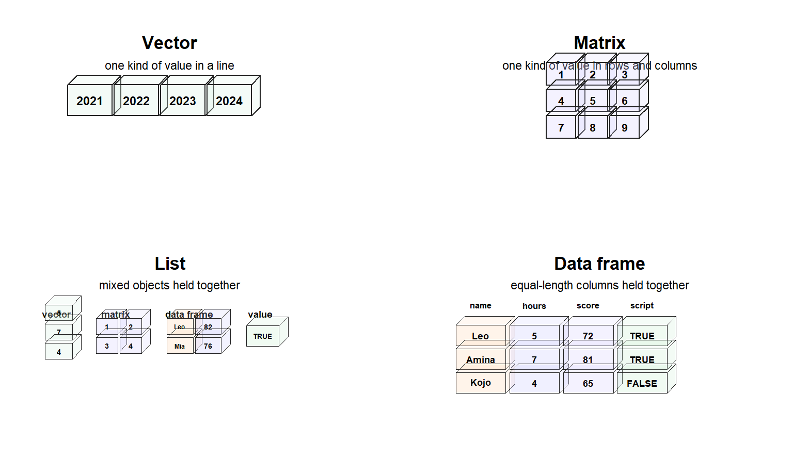

Code
70
#> [1] 70
82
#> [1] 82
91
#> [1] 91
64
#> [1] 64Leo has just crossed an important bridge.
He now understands why "10" and 10 do not behave the same way in R. One is text. The other is a number. They may look similar on the screen, but R does not judge values by appearance alone. R also asks what kind of value each one is.
That was the lesson of Chapter 4.
But real analysis does not stop with one value.
A dataset contains many values at once: scores, names, dates, countries, categories, true-or-false indicators, and repeated observations. One learner record may contain a name as text, study hours as a number, a completion status as a logical value, and an enrolment date as a calendar-aware value. These values are different, but they still belong together.
So a new question appears:
If every value has a type, what happens when many values must live together?
This is where R becomes more than a place that stores values. It becomes a system for organising them.
A single value is easy to inspect. Many values need order. Without order, R cannot know which values form a variable, which values form a record, which values can be calculated together, or which values should remain separate.
R therefore needs more than values.
It needs structures.
By the end of Chapter 4, Leo understood that data is not only what appears on the screen. A value has a type, and that type affects what R can safely do with it.
He learned that:
That understanding was still focused on individual values.
Chapter 5 adds the next layer. A single value has a type, but a group of values also needs an arrangement. That arrangement is the structure.
In this chapter, Leo learns why R needs data structures, how structures organise values, and why vectors, lists, matrices, and data frames behave differently.
The central idea is simple:
Type explains how one value behaves. Structure explains how many values behave together.
Suppose Leo records the scores of four learners.
70
#> [1] 70
82
#> [1] 82
91
#> [1] 91
64
#> [1] 64Each number is meaningful. But as separate values, they are not yet a useful analytical object. R can print them one after another, but it has not been told that they belong together as a set of scores.
Leo does not want four isolated numbers. He wants a collection he can calculate with, inspect, sort, compare, and connect to learner records.
That requires structure.
The same problem appears in every real dataset. A researcher may have many learner names. A public health analyst may have many dates. A migration researcher may have many countries. A teacher may have many assessment records. A business analyst may have many transactions across time.
In each case, R must organise values so it can:
That organisation is called a data structure.
A data structure is not just a place where values are kept. It is a rule-governed arrangement that tells R how values belong together.
In Chapter 3, Leo met containers as a beginner’s mental model: a way to imagine more than one value being held together.
Chapter 5 makes that idea more precise.
A data structure is a defined way R organises values inside a container.
The word defined matters.
A structure is not an empty basket where anything can be dropped without consequence. Each structure has rules. Those rules affect what can go inside, how values are stored, how values are accessed, and what R can do with them.
This is why two objects may both hold data but behave differently. One structure may demand that all its values share one type. Another may allow different types to remain different. One may behave like a simple line of values. Another may behave like a table.
A value is the brick.
A type is the material.
A structure is the arrangement.
Before Leo studies each structure in detail, he needs a first map of the territory.
The figure below is not a full technical definition. It is a mental picture of arrangement: one line, rows and columns, mixed components, and table-like columns.

As shown in Figure fig-four-data-structures, the same idea of “holding values together” can take different shapes. A vector keeps one kind of value in a line. Here, the vector contains year values. A matrix still keeps one kind of value, but arranges it into rows and columns. A list can hold mixed objects together, including a vector, a matrix, a small data frame, and a single value. A data frame holds equal-length columns together as a table, which is why it becomes central to real data work.
The figure is only a map. The next sections explain each structure slowly, starting with the two behaviours Leo needs to recognise before the structure names become meaningful.
Before Leo memorises the names of R structures, he needs to notice a deeper pattern.
Some structures enforce sameness. Others preserve difference.
A structure that enforces sameness is called homogeneous. A structure that preserves different kinds of values is called heterogeneous.
A homogeneous structure says:
Values inside this structure must follow one type rule.
A heterogeneous structure says:
Related values may remain different and still belong together.
This distinction explains why a vector behaves differently from a list, why a matrix is stricter than a data frame, and why R sometimes changes values in ways that surprise beginners.
A homogeneous structure requires a shared type rule.
Homogeneous structures are useful when Leo is working with uniform data, such as:
The strength of this structure is consistency. If R knows a structure is numeric throughout, functions such as mean(), sum(), and max() can operate with confidence.
Sameness is not a limitation here. It is the condition that makes certain operations safe.
The simplest common data structure in R is the vector.
A vector holds multiple values in a single ordered structure. Leo can create a vector of scores using c(), which combines values.
scores <- c(70, 82, 91, 64)
scores
#> [1] 70 82 91 64This object now holds four values together.
They are not four separate numbers sitting loosely on the screen. They are one structured object named scores.
Because the values are numeric and belong together, Leo can calculate with them easily.
mean(scores)
#> [1] 76.75The calculation works smoothly because the values inside scores share a common type. They are all numbers, and the structure is designed for that kind of uniformity.
The vector is also ordered. The first value is 70, the second is 82, the third is 91, and the fourth is 64. This order means R can access values by position.
scores[1]
#> [1] 70The result is the first value in the vector.
At this point, Leo has learned something small but powerful: R is not just storing four scores. It is storing them in a structure that makes calculation and selection possible.
The first example used numbers because numeric vectors are easy to calculate with. But a vector does not have to be numeric.
A vector can hold different kinds of data, as long as one atomic vector keeps one type rule.
Leo can create a character vector of countries.
countries <- c("Nigeria", "Ghana", "Kenya", "South Africa")
countries
#> [1] "Nigeria" "Ghana" "Kenya" "South Africa"
typeof(countries)
#> [1] "character"This vector is still homogeneous. Its values are all character values.
He can also create a logical vector.
completed <- c(TRUE, TRUE, FALSE, TRUE)
completed
#> [1] TRUE TRUE FALSE TRUE
typeof(completed)
#> [1] "logical"This vector is homogeneous too. Its values all carry truth-or-false meaning.
Dates can also live in a vector, although dates need both storage and class information.
login_dates <- as.Date(c("2026-04-01", "2026-04-03", "2026-04-08"))
login_dates
#> [1] "2026-04-01" "2026-04-03" "2026-04-08"
typeof(login_dates)
#> [1] "double"
class(login_dates)
#> [1] "Date"The underlying storage is not the whole story here. typeof() shows the lower-level storage, while class() tells Leo that R should treat the values as dates. This connects back to Chapter 4: sometimes R needs more than the raw storage type to know how a value should behave.
Factors also behave as structured categorical vectors.
r_experience_level <- factor(c("beginner", "developing", "beginner", "confident"))
r_experience_level
#> [1] beginner developing beginner confident
#> Levels: beginner confident developing
typeof(r_experience_level)
#> [1] "integer"
class(r_experience_level)
#> [1] "factor"A factor is useful when values represent categories. It may print like words, but internally it carries category structure.
So the deeper point is not that a vector must be numeric. The point is that a vector is a one-dimensional structure that expects internal consistency.
A vector is:
Leo can now see why vectors are everywhere in R. A column in a data frame is usually a vector. That means understanding vectors prepares him to understand larger data structures later.
The same vector rule that makes numeric calculation easy can also create surprises.
A vector wants its values to share one type. So what happens if Leo tries to combine values that do not naturally share the same type?
mixed <- c(10, "Leo", TRUE)
mixed
#> [1] "10" "Leo" "TRUE"Leo intended to combine a number, text, and a logical value. But an atomic vector cannot preserve different atomic types side by side without coercion. It must find one common type that can hold all the values.
He can inspect what happened.
typeof(mixed)
#> [1] "character"R reports that the vector is character.
The number 10 and the logical value TRUE have been converted so they can live with "Leo" inside one homogeneous structure. R has forced consistency.
This behaviour is not random. R is protecting the rule of the structure. The vector says, in effect, “If values must live here together, they must share one type.”
When R forces values to fit inside a homogeneous structure, the result may look harmless but change the meaning of the data.
A value that looked numeric may now behave like text. This is why inspecting structure is not optional in serious analysis.
This is only a preview of coercion. Later chapters will return to it with more care. For now, Leo only needs the core lesson: a homogeneous structure may change values so that the structure remains consistent.
A matrix deserves to sit beside the vector in Leo’s mind because it is also homogeneous.
The difference is shape.
A vector is one-dimensional. A matrix is two-dimensional. It has rows and columns, but it still expects one common type throughout the whole structure.
Leo can create a numeric matrix.
score_matrix <- matrix(c(70, 82, 91, 64, 75, 88), nrow = 2)
score_matrix
#> [,1] [,2] [,3]
#> [1,] 70 91 75
#> [2,] 82 64 88
typeof(score_matrix)
#> [1] "double"This object is rectangular. It has rows and columns. But every value inside it is numeric, so R can treat it as a consistent block of values.
A matrix can also be character.
name_matrix <- matrix(c("Ada", "Bola", "Chidi", "Dara"), nrow = 2)
name_matrix
#> [,1] [,2]
#> [1,] "Ada" "Chidi"
#> [2,] "Bola" "Dara"
typeof(name_matrix)
#> [1] "character"This is still a matrix. It is not numeric, but it is homogeneous because every value is character.
A matrix can also be logical.
completion_matrix <- matrix(c(TRUE, FALSE, TRUE, TRUE, FALSE, TRUE), nrow = 2)
completion_matrix
#> [,1] [,2] [,3]
#> [1,] TRUE TRUE FALSE
#> [2,] FALSE TRUE TRUE
typeof(completion_matrix)
#> [1] "logical"Again, the rule is not “a matrix must be numeric.” The rule is “a matrix must be consistent throughout.”
This is why matrix is not a weaker or secondary example of homogeneity. It is the rectangular version of the same principle.
A matrix is:
Leo can access one cell by giving R a row position and a column position.
score_matrix[1, 2]
#> [1] 91This means: row 1, column 2.
A matrix can also surprise Leo in the same way a vector can. If he mixes types, R must force the values into one common type.
mixed_matrix <- matrix(c(10, "Leo", TRUE, 25), nrow = 2)
mixed_matrix
#> [,1] [,2]
#> [1,] "10" "TRUE"
#> [2,] "Leo" "25"
typeof(mixed_matrix)
#> [1] "character"Because one character value entered the matrix, the entire matrix became character data. R is not being careless. It is preserving the matrix rule.
A matrix is therefore strict in two ways. It must remain rectangular, and it must remain type-consistent.
This is why a matrix is powerful for certain mathematical tasks, but not ideal for ordinary mixed research records.
Vectors and matrices are strict for the same reason: they gain reliability by asking their values to share one type.
Homogeneous structures are useful when consistency matters. They support fast calculation, predictable behaviour, efficient storage, and fewer surprises during mathematical work.
A homogeneous structure is not trying to represent every kind of information at once. It is trying to hold one kind of information well.
Real life is not always uniform.
A learner is not only a score. A learner may have a name, a country, a registration date, a completion status, and a project mark. These pieces of information belong together, but they do not share one type.
A homogeneous vector is not the right structure for this kind of mixed record.
R therefore needs structures that can hold related values without flattening their differences. These are heterogeneous structures.
Some structures gain speed and predictability by enforcing sameness.
Others gain flexibility by allowing difference.
Neither is automatically better. The right structure depends on the task.
The most flexible basic structure in R is the list.
A list can hold values of different types without forcing them into one type rule.
Leo can create a simple record about himself.
person <- list(
name = "Leo",
age = 34,
certified = TRUE
)
person
#> $name
#> [1] "Leo"
#>
#> $age
#> [1] 34
#>
#> $certified
#> [1] TRUEThis object stores related information in one place.
Unlike the vector mixed, the list does not need to turn everything into text. It keeps "Leo" as character, 34 as numeric, and TRUE as logical.
A list can also hold more than single values. One component may be a character value. Another may be a numeric value. Another may be a logical value. Another may be a vector.
learner_profile <- list(
name = "Leo",
country = "Nigeria",
study_hours = c(2, 4, 5, 3),
certified = TRUE,
enrolment_date = as.Date("2026-04-01")
)
learner_profile
#> $name
#> [1] "Leo"
#>
#> $country
#> [1] "Nigeria"
#>
#> $study_hours
#> [1] 2 4 5 3
#>
#> $certified
#> [1] TRUE
#>
#> $enrolment_date
#> [1] "2026-04-01"This is a more realistic heterogeneous structure. The components belong together, but they do not have the same type or the same length.
Leo can inspect the structure using str().
str(learner_profile)
#> List of 5
#> $ name : chr "Leo"
#> $ country : chr "Nigeria"
#> $ study_hours : num [1:4] 2 4 5 3
#> $ certified : logi TRUE
#> $ enrolment_date: Date[1:1], format: "2026-04-01"The function str() means structure. It gives Leo a compact view of what an object contains and how it is organised.
str(learner_profile) shows that the object is a list, that it has named components, and that each component keeps its own identity.
The list has not erased difference. It has organised difference.
A list is:
Lists often use names rather than positions because their components may represent different kinds of information.
Leo can access a named component with $.
learner_profile$name
#> [1] "Leo"He can also extract a component with double brackets.
learner_profile[["study_hours"]]
#> [1] 2 4 5 3Both examples remind him that a list is not one flat line of values. It is a collection of components.
Lists exist because many meaningful things are not made from one kind of value.
A learner record may combine text, numbers, dates, logical values, and scores. A research model may combine a formula, fitted values, residuals, coefficients, diagnostics, and metadata. These pieces differ, but they belong together.
A heterogeneous structure gives R the flexibility to keep such pieces connected without pretending they are all the same.
That flexibility has a trade-off. A list is not as simple to calculate across as a numeric vector. R must know which component Leo wants and what kind of value lives there.
Structure gives power by setting rules. The rules differ because the problems differ.
The structure Leo will use most often is the data frame.
A data frame is R’s classic table-like structure. It looks familiar to anyone coming from spreadsheets because it has rows and columns. But it is not just a spreadsheet inside R. It has rules.
Leo can create a small data frame.
students <- data.frame(
name = c("Ada", "Bola", "Chidi"),
score = c(70, 82, 91),
certified = c(TRUE, TRUE, FALSE)
)
studentsThis object contains three learners and three variables.
The rows represent observations or records. Each row belongs to one learner.
The columns represent variables. Each column holds one kind of information. Each column in a data frame is usually a vector.
This is the important part: a data frame allows different columns to have different types, but each column keeps its own internal discipline.
So a data frame is a carefully organised compromise.
It is heterogeneous across columns because name, score, and certified can have different types.
It is homogeneous within each column because the score column holds numbers, the name column holds text, and the certified column holds logical values.
That is why data frames are so powerful.
They allow real-world mixed information while preserving enough structure for analysis.
Leo can make this clearer by adding more types.
students_extended <- data.frame(
name = c("Ada", "Bola", "Chidi"),
country = c("Nigeria", "Ghana", "Kenya"),
score = c(70, 82, 91),
certified = c(TRUE, TRUE, FALSE),
enrolment_date = as.Date(c("2026-04-01", "2026-04-03", "2026-04-08"))
)
students_extendedThis data frame contains text, numbers, logical values, and dates in one table-like structure. It can do this because each column carries its own type rule.
A data frame is structured heterogeneity.
Different columns can hold different kinds of values, but each column keeps its own type rule. That is why data frames combine flexibility with consistency.
A data frame is:
This is why a data frame is different from a matrix. Both have rows and columns, but a matrix enforces one type across the whole rectangle. A data frame allows different column types while keeping the table disciplined.
Leo should never trust a data object only by how it prints.
A printed table may look correct while hiding a problem. A score may have been imported as text. A date may still be character. A true-or-false variable may be stored as words instead of logical values.
This is why inspection matters.
str(students_extended)
#> 'data.frame': 3 obs. of 5 variables:
#> $ name : chr "Ada" "Bola" "Chidi"
#> $ country : chr "Nigeria" "Ghana" "Kenya"
#> $ score : num 70 82 91
#> $ certified : logi TRUE TRUE FALSE
#> $ enrolment_date: Date, format: "2026-04-01" "2026-04-03" ...This output tells Leo several things at once.
He should notice that:
The printed data frame shows the surface. str() shows the internal organisation.
A spreadsheet user often looks at data and trusts what appears visually. An R user learns to inspect what the object actually is.
Before analysing an object, inspect its structure.
Do not only ask, “What does it look like?”
Ask, “What is it, and how are its values organised?”
At this point, the names begin to make sense.
Vectors, lists, matrices, and data frames are not random terms to memorise. They are different answers to different organisation problems.
| Structure | Shape | Type Rule | Beginner Meaning | Common Use |
|---|---|---|---|---|
| Vector | One-dimensional | Same type throughout | A line of related values | Scores, countries, dates, categories, logical flags |
| Matrix | Two-dimensional rectangle | Same type throughout | A strict block with rows and columns | Numerical tables, mathematical work, logical or character grids |
| List | Flexible components | Different types and lengths allowed | A labelled collection of mixed items | Learner records, model outputs, complex objects |
| Data frame | Two-dimensional rectangle | Columns can differ, but each column keeps a type rule | A table of variables and observations | Real-world datasets |
The pattern is now visible.
Vectors enforce sameness in a line.
Matrices enforce sameness in a rectangle.
Lists preserve difference in a flexible collection.
Data frames preserve difference across variables while keeping each variable internally organised.
This is the point where Leo’s understanding should shift. Data structures are not only storage choices. They shape what kind of work is easy, safe, or natural.
The structure of an object affects how Leo can work with it.
It affects whether he can calculate a mean directly. It affects how he selects part of the object. It affects how R prints it, summarises it, models it, and transforms it.
A numeric vector is ready for direct calculation.
mean(scores)
#> [1] 76.75A list is different because it may contain different kinds of components. Leo must first select the component he wants.
A data frame supports table-like work. Leo can select a column, filter rows, compare variables, and later build visualisations or models.
This leads to a practical rule:
Choose structure based on the task.
If Leo has one set of numeric values, a vector may be enough. If he has a strict rectangular block of numbers, a matrix may be appropriate. If he has mixed pieces of related information, a list may be useful. If he has variables and observations, a data frame is usually the natural home.
R has more than one kind of container because data does not always have one kind of shape.
Once values are structured, Leo needs a way to access the parts.
This chapter offers only a first exposure. Later chapters will go deeper into subsetting and data manipulation. For now, Leo only needs to see that structure makes selection possible.
Using the students data frame, he can select the name column with $.
students$name
#> [1] "Ada" "Bola" "Chidi"The $ operator selects a named component, often a column in a data frame.
He can also extract the score column by name using double brackets.
students[["score"]]
#> [1] 70 82 91The double brackets [[ ]] extract one component from a structured object.
Because a data frame is table-like, Leo can also select by row and column position.
students[1, 2]
#> [1] 70This means: first row, second column.
In a table-like structure, the position is read as row first, column second.
Leo does not need to master indexing now. He only needs the first insight: once data has structure, R can locate parts of it in structured ways.
df_r_migrationThe small examples in this chapter prepare Leo for the larger dataset that will guide the book: df_r_migration.
This object will be a table-like structure. Leo should begin thinking of it as a data frame, not as a loose pile of values.
In the teaching version of df_r_migration used across the book:
learner_id identifies learners;country and background describe categorical or text information;study_hours, confidence_score, and project_score behave like numeric variables;first_script_completed behaves like a logical variable when cleaned;enrolment_date and first_login_date behave like date variables when R is told to treat them as dates.This is why the data frame matters so much.
A real dataset needs to preserve relationships. Leo must know which score belongs to which learner, which country belongs to which record, and which completion status belongs to which observation. Rows and columns help R preserve those relationships.
Without structure, values are just pieces. With structure, they become analysable data.
Leo has met several structures, but the deeper lesson is simple.
A vector holds values in a line and enforces one type.
A matrix holds values in rows and columns, but still enforces one type.
A list holds different kinds of values together without forcing them into one type.
A data frame holds variables and observations in a table-like structure, allowing different columns to have different types while preserving row relationships.
This is why structure matters: it tells R how values belong together.
Create three vectors: one numeric, one character, and one logical. Inspect each one with typeof().
Then create a small matrix and inspect it with typeof() and dim().
After that, create a list with your name, age, one logical value, and one short numeric vector.
Finally, place three or four equal-length variables into a data frame and inspect it with str().
The goal is not speed. The goal is to see how structure changes what R shows you.
Leo writes down five reminders before moving on:
str() is one of the fastest ways to see what an object really is.Then he adds one more line:
A structure is never just storage. It has rules.
That sentence will save him from many beginner mistakes.
Before moving into the next chapter, Leo should practise seeing structure rather than only seeing output.
study_hours <- c(2, 4, 5, 3, 6)
countries <- c("Nigeria", "Ghana", "Kenya", "South Africa", "Rwanda")
first_script_completed <- c(TRUE, FALSE, TRUE, TRUE, FALSE)
typeof(study_hours)
#> [1] "double"
typeof(countries)
#> [1] "character"
typeof(first_script_completed)
#> [1] "logical"Ask yourself: what makes each vector homogeneous, even though the three vectors do not have the same type?
first_login_date <- as.Date(c("2026-04-01", "2026-04-03", "2026-04-08"))
r_experience_level <- factor(c("beginner", "developing", "confident"))
class(first_login_date)
#> [1] "Date"
class(r_experience_level)
#> [1] "factor"Ask yourself: why is class() useful when a vector has behaviour that goes beyond its basic storage type?
weekly_scores_vector <- c(70, 82, 91, 64, 75, 88)
weekly_scores_matrix <- matrix(weekly_scores_vector, nrow = 2)
weekly_scores_vector
#> [1] 70 82 91 64 75 88
weekly_scores_matrix
#> [,1] [,2] [,3]
#> [1,] 70 91 75
#> [2,] 82 64 88
typeof(weekly_scores_matrix)
#> [1] "double"
dim(weekly_scores_matrix)
#> [1] 2 3Ask yourself: how is the matrix similar to the vector, and how is it different?
learner_record <- list(
learner_id = "L001",
country = "Nigeria",
study_hours = c(2, 4, 5),
first_script_completed = TRUE
)
str(learner_record)
#> List of 4
#> $ learner_id : chr "L001"
#> $ country : chr "Nigeria"
#> $ study_hours : num [1:3] 2 4 5
#> $ first_script_completed: logi TRUEAsk yourself: why did the list preserve different types instead of forcing one common type?
mini_migration <- data.frame(
learner_id = c("L001", "L002", "L003"),
country = c("Nigeria", "Ghana", "Kenya"),
study_hours = c(5, 3, 6),
first_script_completed = c(TRUE, FALSE, TRUE)
)
str(mini_migration)
#> 'data.frame': 3 obs. of 4 variables:
#> $ learner_id : chr "L001" "L002" "L003"
#> $ country : chr "Nigeria" "Ghana" "Kenya"
#> $ study_hours : num 5 3 6
#> $ first_script_completed: logi TRUE FALSE TRUEAsk yourself: which parts of this object are homogeneous, and which part is heterogeneous?
Data structure
A defined way R organises values inside a container.
Homogeneous structure
A structure that requires values to follow one type rule.
Heterogeneous structure
A structure that can hold related values of different types.
Vector
A one-dimensional, ordered structure that holds values of one type. Numeric, character, logical, date, and factor vectors are all possible, but each atomic vector keeps one internal type rule.
List
A flexible structure that can hold different kinds of values as named or unnamed components. A list can also hold objects of different lengths, including vectors, dates, data frames, and other lists.
Matrix
A rectangular structure with rows and columns that keeps one type rule throughout. A matrix may be numeric, character, or logical, but it does not mix those types without forcing consistency.
Data frame
A table-like structure where columns can have different types, while each column keeps its own internal type rule. It is heterogeneous across columns and disciplined within columns.
str()
A base R function that shows the internal structure of an object.
Leo now understands three layers of R thinking.
First, data exists as values.
Second, values have types.
Third, values are organised into structures.
Those structures impose rules about how values fit together. Vectors and matrices enforce sameness. Lists preserve difference. Data frames combine different columns while keeping each column disciplined.
But one question remains.
What happens when values do not naturally fit the rules of the structure?
Sometimes R changes values automatically. Sometimes that change helps. Sometimes it silently changes the meaning of the analysis.
That is the next doorway.
Chapter 6 explores coercion: how and why R converts values from one type into another, and why careful analysts inspect those conversions before trusting the result.
By the end of this chapter, Leo should be able to:
str();df_r_migration;Leo now knows that values have types and structures have rules. Next, he will discover what happens when values do not naturally fit those rules, and why R sometimes changes values to make them fit.